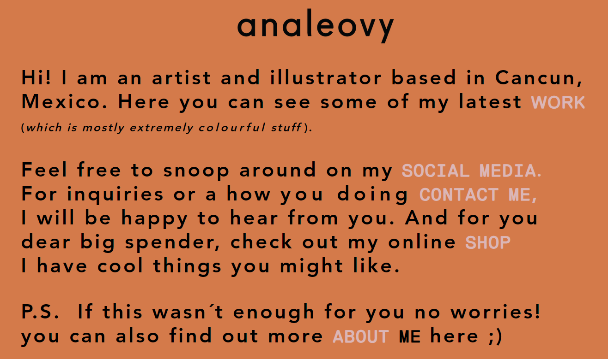
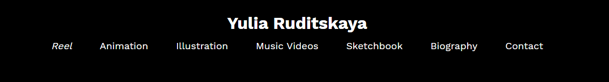
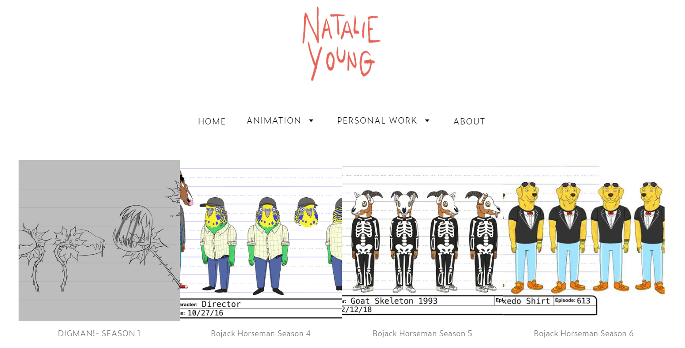
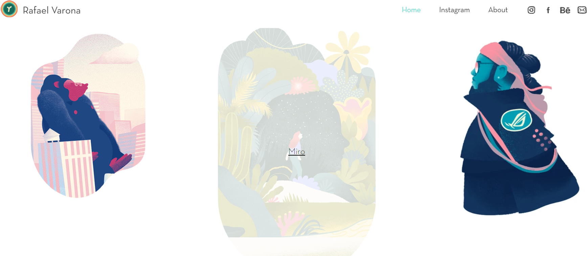
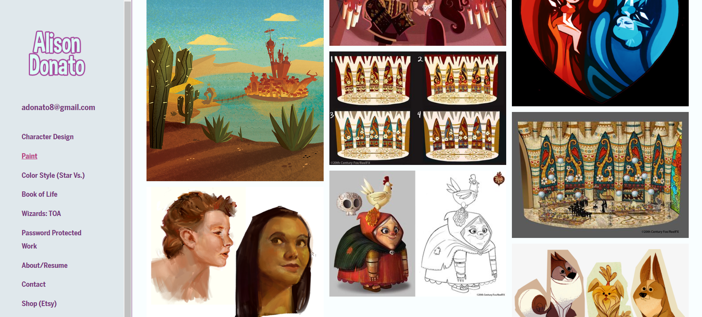

IMAGINING THE INTERNET |
Week 1
My goals for this course:
- My first goal for this course is to understand, and learn how to code in CSS and Javascript. I learnt HTML in CAT class when I was in high school so I still remember the basics.
However, I still plan on putting in the same amount of effort when learning/re-learning all of them.
- My second goal is to create a functional, aesthetically pleasing website that reflects my abilities and the effort that I put into my work.
- My last goal is to achieve a mark that is 60% and above. This is the standard that I put for all my courses and it is how I know that I have done well.
My experience setting up GitHub and publishing to Pages:
I found it pretty simple to set up my repository and publish my document to Pages. This is because I am used to working with GitHub from the assignments we had last year.
Also, before class, I watched an intro video from Visual Studio Code's YouTube channel, therefore, I was familiar with the interface and knew how to navigate around it.
Reflection on the readings:
I chose two readings: "What Hypertext Is" by Noah Wardrip-Fruin and "As We May Think At 65" by Simon Harper. I chose these because they had fewer pages and I figured it would
be much easier for me to engage with two short readings instead of one long one. And I would gain more knowledge from two different sources.
- The Wardrip-Fruin reading taught me a lot. This is because I did not know what hypertext is and after reading it I understood it a bit better. The author explores the concept of
"hypertext" and shows how different types of academics define it. He eventually concludes that to truly understand the concept one should analyse the definition given by the
"thinker who coined [it]" (Wardrip-Fruin, p.126). Theodore Holm Nelson, the creator of "hypertext" defines it as "forms of writing which branch or perform on request [and] are
best presented on computer screens" (Wardrip-Fruin, p.127). After engaging with this reading I attempted to use what I learnt and give my own definition of hypertext. Hyper-
means excessive and text means words/a form of writing so put together, I define hypertext as something that gives you access to lots of words or writing. To relate this to my experience
of the internet an example of hypertext would be Wikipedia. This is because when I search for something on the site it always leads me to another page or provides links to similar content, to quote
my definition, "it gives me access to lots of other words/information".
- The Harper reading was really interesting. This is because I did not read the Vannevar Bush essay, that it is based on, but after reading Harper's review about it, I knew exactly
what it is about. This reading outlines the impact that 'As We May Think' has made, 65 years later. Harper tells the reader about how Bush created the MEMEX. This is "a device
which stores an individual's books, records, and communications. It is also mechanised so that it may be consulted with exceeding speed and flexibility" (Harper, p.2). It is also
credited as being inspiration for the modern Web. I learnt that Bush wanted computers to help users with whatever they needed and for information to be readily available to
them. To relate this to my experience of the internet, this idea of MEMEX basically describes what websites are. I can search for something on the internet and I instantly get
referred to websites that match my request which are organised by relevance and popularity.
Interesting things about the history of the web:
- I learnt that the web was first created as a way for scientists to share experiment data with each other but it grew to become more than that.
- I learnt that Tim Berners-Lee created the first website in 1991 and he also coined the term "World Wide Web".
- Also, I learnt that the internet and the web are not the same thing, and that was shocking to me. "The internet is a huge network of computers all over the world, which are connected together
whereas the world wide web is a collection of web pages found on this network of computers" (CBBC Newsround, 2019)
References
- Harper, S. (2010) ‘“As We May Think” at 65’, ACM SIGWEB Newsletter, 2010(Spring), pp. 1–3.
- Wardrip-Fruin, N. (2004) ‘What hypertext is’, in Proceedings of the fifteenth ACM conference on Hypertext and hypermedia. HT04: 15th Conference on Hypertext and Hypermedia, Santa Cruz CA USA: ACM, pp. 126–127.
- World wide web turns 30: Facts you didn’t know - CBBC Newsround. (2019). www.bbc.co.uk. [online] 11 Mar. Available at: https://www.bbc.co.uk/newsround/47514334.
|
INTERACTION AND THE WWW/HTML FUNDAMENTALS |
Week 2
Folder structure and URL scheme:
- I have a main folder where my repository was cloned and inside it are my HTML files, folders for images, scripts, and styles as well as a README file. The images folder contains
all the images I will use for my website and the scripts and styles folders will contain my Javascript and CSS files respectively. The reason for my folder structure is that it is
simple to understand and well-organised.
- According to the HTML Fundamentals video, a URL scheme is the first part of a URL which "indicates the protocol that the browser must use to request the resource" (MDN Contributors, 2023). "Https" is the usual
protocol for websites and it is the same for my website because my URL is: https://wits-digital-arts-interactive-media.github.io
/WSOA3028A_2562617/.
Wireframe Ideas:
Details about the wireframes are found on the Design page.
Inspirational websites:
These are some artists that I found inspirational to me as an aspiring animator. Their portfolio websites are nothing short of amazing and they used creative ways to display
their work, which I hope to achieve by the end of the semester.
| Ana Levy |
 |
I like how simple and straight-to-the-point Ana Levy's homepage is. When viewers want to explore other parts of her website they can click on the links in the light grey text. |
| Yulia Ruditskaya |
 |
I like how Yulia Ruditskaya's navigation tab shows viewers which page they are on by italicising it. This can be seen in the screenshot with the word "Reel" being in italics
and the rest of the tabs being in normal text. |
| Natalie Rose Young |
 |
I really enjoyed seeing Natalie Rose Young's work because I have watched some of the animated shows that she has drawn characters for. However, I did not find her website
interesting. I feel as though it is something that I could make so it was lacking in creativity. For instance, the background is white and it could have been better with a bit of
colour or some patterns. Another thing is that her drawings do not have explanations, she just put pictures without some descriptions about them and their significance. |
| Rafael Varona |
 |
I like how responsive Rafael Varona's website is. When a viewer hovers over an artwork, it gets greyed out and a link appears to show that they can read more about it. This is
something that I will definitely use for my website to make it interesting. |
| Alison Donato |
 |
Unlike all the other websites I have seen, Alison Donato's has a left-side panel as a navigation bar. Instead of scrolling up to change the page, the viewer has all they need from this
panel and it might make their experience of the website better. I found this very interesting because it kind of broke the convention of what I know websites to be. |
Reflection on the Moulthrop reading:
This reading was a bit difficult to fully understand and it took me two days to finish. The beginning part about hypertext was easy to get into because last week I chose Noah Wardrip-
Fruin's reading "What hypertext is" so I knew about its history. However, as it moved into the section about the laws of media, I was confused. I think a big part of my confusion is
how this is relevant to what we are learning about. It was an overload of information but I was able to write some notes on some things that seemed important.
- The web is today's hypertext system
- Instant messaging is a hypertext-like service
Marshall McLuhan's Laws of Media:
- What does it enhance or intensify?
- What does it render obsolete or displace?
- What does it retrieve that was previously obsolete?
- What does it produce or become when it is taken to its limit?
Reflect on Interaction and the WWW:
- Firstly, I see interaction as the concept of input and output. I do something and I expect something to happen in return, I speak to a person and I expect a reply from them,
I click on a link and I expect a new tab to be opened. This lecture was really interesting. I liked the video from the Vox YouTube channel because it shaped what the lecture is
about. I related to Don Norman when he spoke about not being able to use doors. Sometimes doors are labelled "push" but are actually "pull" and other times they are not
labelled at all. After finishing the video, I started critiquing the design of some things that I interacted with daily such as windows, switches, and wardrobes and saw how cool
or flawed the makers were in their design of those objects.
- So how does this relate to the idea of interaction? According to Aaron Smuts, "Something is interactive if and only if it is responsive, does not
completely control, is not completely controlled, and does not respond in a completely random fashion." Going back to the door example, that door is supposed to respond to
being touched by moving or making a sound. It should allow me to control it to decide if I want to open or close it, also I am not supposed to completely control it, for example,
it should not require me to lift it. Finally, it should react the way that I want it to, when I want to walk into a building the door must be able to open and when I walk out it
should be able to close. With the web, I learnt that computers are interactive so when one is on the web, they use the computer's functions to interact with it. I also learnt
more about hypertext and hypermedia and from what I read, I even concluded that a modern form of hypertext is Wikipedia. Through this lecture, I found that I was correct
because the images of the paper-based hypertexts look similar to how Wikipedia is structured.
References
- Moulthrop, S. (2003) ‘You Say You Want a Revolution? Hypertext and the Laws of Media (1991)’, in N. Wardrip-Fruin and N. Montfort (eds) The New Media Reader. HAR/CDR
edition. Cambridge, Mass: The MIT Press
- MDN Contributors (2023). What is a URL? - Learn web development | MDN. [online] developer.mozilla.org. Available at: https://developer.mozilla.org/en-US/docs/Learn/
Common_questions/Web_mechanics/What_is_a_URL [Accessed 24 Feb. 2024].
|
INTERACTION DESIGN FOR THE WEB/
SEMANTIC MARKUP |
Week 3
|
THE IxD PROCESS/
HEADERS AND MICROFORMATS |
Week 4
|
THE ETHICS OF UI & UX PRACTICE/
JS FUNDAMENTALS |
Week 5
|